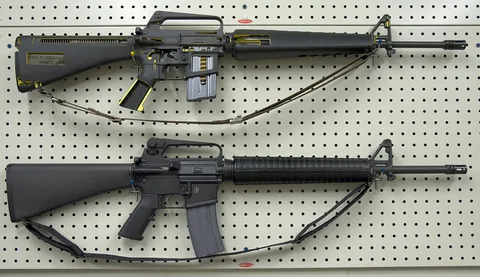

Винтовка М-16
Описание
5,56-мм автомат M16 (официальное обозначение — Rifle, Caliber 5.56 mm, M16) — американская штурмовая винтовка калибра 5,56 мм, разработанная и принятая на вооружение в 1960-х годах.
M16 и её модификации до настоящего времени остаются основным образцом стрелкового оружия всех пяти видов вооружённых сил, силовых структур и полицейских подразделений США, а равно и других стран мира. Это одна из наиболее распространённых моделей стрелкового оружия в мире — было выпущено более 8 миллионов экземпляров.
История:
Начало работам над малокалиберным оружием под патрон, промежуточный по мощности между полноразмерным винтовочным и пистолетным, в США было положено как один из результатов проекта ALCLAD, направленного на разработку нательной брони для Армии США. В его ходе было проанализировано более трёх миллионов отчётов о гибели и ранениях солдат на поле боя за период с Первой мировой по Корейскую войны. Исследовалось количество ранений, поражённые части тела, типология нанесённых повреждений и дистанции, на которых они были получены.
Одним из результатов данного исследования стал вывод о необходимости создания для Армии США лёгкого оружия с небольшим импульсом отдачи, ведущего автоматический огонь специальными облегчёнными патронами малого калибра, эффективный на расстоянии не более 400—500 метров. Тактико-технические требования включали в себя, помимо калибра, возможность ведения одиночного и автоматического огня, 20-патронный магазин, массу с полным магазином не более 3 кг (6 фунтов) и способность пробить навылет стандартную армейскую каску с 500 м.
AR-15 была разработана конструкторами Юджином Стоунером и Джеймсом Салливаном на базе более ранней винтовки AR-10 калибра 7,62 NATO.